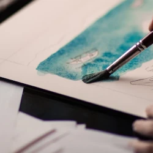

Materials
We can't wait to dive into the world of watercolours with you. Just a quick heads-up: you'll need to bring your own materials to our course. But don't worry, below you’ll find a list of exactly what you’ll need.
-
1. Watercolour Paper:
Make sure to grab watercolour paper with a thickness of 300g. We’ll be putting a lot of water and paint down on the paper, which can be too much to handle for a thinner kind of paper.
Our recommendation is also to go for a cold-pressed, fine grain type paper.
 -
2. Brushes:
You'll need a few brushes – one large round (16-24), one small round (4-6), and a mottler brush (around 5cm wide).
We’d like to emphasise there’s no need to splurge on expensive brushes at this point. Affordable hobby-level brushes, typically under 5 EUR each, are perfectly fine for learning.

-
3. Watercolour Paints:
Watercolour paints come in two main forms: pans and tubes. We recommend using tubes for their versatility.
As a beginner, it's wise to resist the temptation to purchase an extensive range of colours. Instead, we suggest starting with a basic set of colours to encourage colour mixing. Your initial colour palette should include:
- Red: Alizarin crimson
- Yellow: New gamboge
- Blue: Antwerp blue
- Black: Payne's grey
- Brown: Burnt umber
-
4. Masking Tape:
Grab regular masking tape from a hardware store. It's your secret weapon for creating clean edges, as well as avoiding the paper buckling from the water.
We hope this information helps you prepare for our watercolour course. Don't hesitate to reach out if you have any questions or need further guidance.
See you in class, ready to unleash your inner artist!